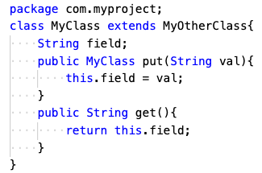

Slicer4J's implementation is available here.
Using the Tool
Display the command line options using:
java -cp "Mandoline/target/mandoline-jar-with-dependencies.jar:Mandoline/target/lib/*" ca.ubc.ece.resess.slicer.dynamic.slicer4j.Slicer -h
Wrapper script
A simpler method to use Slicer4J is by using the wrapper python script:
scripts/slicer4j.py You can list the script options using:
python3 slicer4j.py -h Slicer4J uses up to 8GB of RAM. The tool will crash with
OutOfMemoryError exception if the trace size is greater than 8GB. In that case, you can change maximum heap size allocated to Slicer4J by changing the -Xmx8g to a higher value (e.g. -Xmx16g).
Mandatory Options:
| Option |
Description |
|---|---|
| -h | show help message and exit |
| -j | Path to jar file |
| -o | Output folder |
| -b | line to slice backward from, in the form of FileName:LineNumber |
Optional Options:
| Option |
Description |
|---|---|
| -m | Main class to run with arguments, in the form of "FileName Arguments" |
| -tc | Test class name to run, if this is provided, -tm must also be provided |
| -tm | Test method to run |
| -dep | Directory to folder containing JAR dependencies, if any |
| -mod | Folder containing user-defined method models |
| -d | Slice with data-flow dependencies only |
| -c | Slice with control dependencies only |
User-defined method models:
The following is an example for defining your own method models. For the methods in this class:

create an XML file named
com.myproject.Myclass.xml and place it in a folder containing your method models, this is the folder we pass to Slicer4J using the -mod option
For example, here's the model for the above class
The
id of each method is the method signature. Each method has flows from parameters, the receiver, and their fields, to other parameters, the receiver, their fields, and the return.
Each flow is specified with it
sourceSinkType as Parameter, Field, or Return.
Parameter is used for parameters. Field is used for the receiver or fields of the receiver. Return is for the method return.
For parameters, we also need
ParameterIndex to specify which parameter (first, second, etc.).
For fields, we specify the signature of the field in AccessPath and its type in AccessPathTypes.